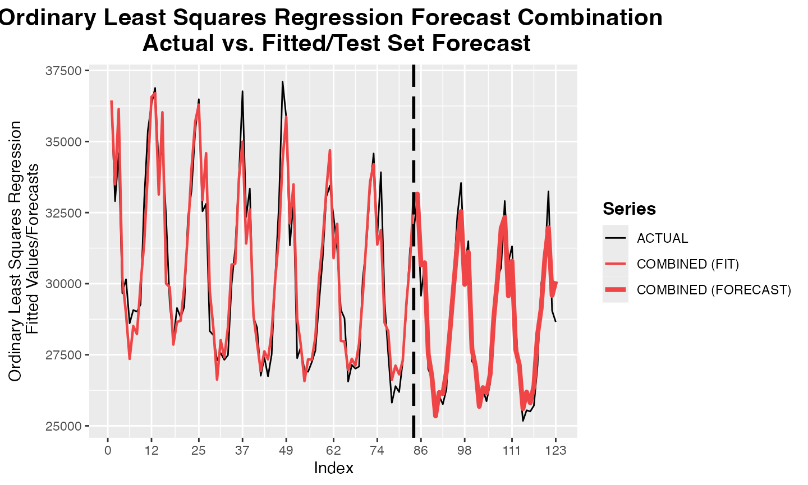
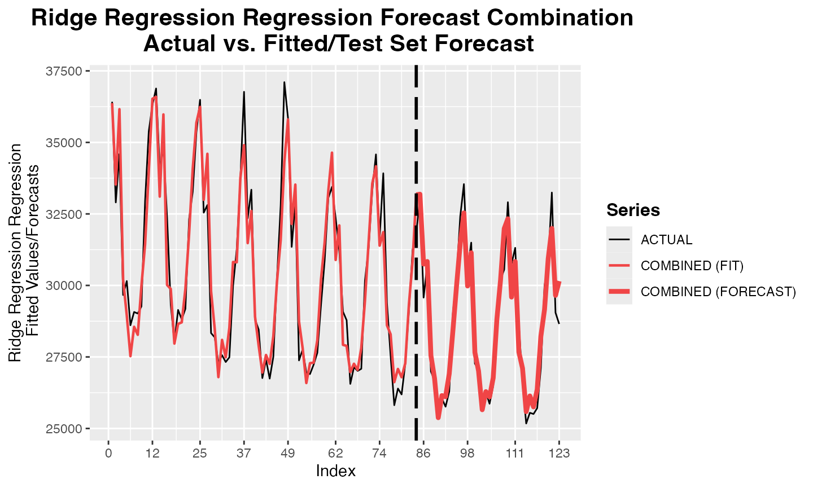

comb_OLS.Rmd## Loading required package: remotes## Loading required package: glmnet## Loading required package: Matrix## Loaded glmnet 4.1-8## Loading required package: ahead## Loading required package: foreach## Loading required package: snow## Registered S3 method overwritten by 'quantmod':
## method from
## as.zoo.data.frame zoo## Registered S3 method overwritten by 'ForecastComb':
## method from
## predict.ridge ahead##
## Attaching package: 'ForecastComb'## The following objects are masked from 'package:ahead':
##
## comb_GLMNET, comb_OLS, comb_Ridge, ridge## arima ets nnet dampedt dotm Actual
## Jan 2007 36980.16 35692.31 37047.91 35540.66 36044.28 36420
## Feb 2007 33587.29 33708.15 34523.56 33962.34 33821.69 32901
## Mar 2007 36005.55 37366.20 36049.72 37317.91 37119.29 34595
## Apr 2007 30925.25 30550.24 30721.91 30356.77 30350.95 29665
## May 2007 30394.78 29167.64 29241.89 28766.40 28910.84 30154
## Jun 2007 28938.14 29004.18 29211.91 29006.25 28229.28 28607
(forecasting_methods <- colnames(electricity)[1:5])## [1] "arima" "ets" "nnet" "dampedt" "dotm"
train_obs <- electricity[1:84, "Actual"]
train_pred <- electricity[1:84, forecasting_methods]
test_obs <- electricity[85:123, "Actual"]
test_pred <- electricity[85:123, forecasting_methods]
data <- ForecastComb::foreccomb(train_obs, train_pred, test_obs, test_pred)
start <- proc.time()[3]
obj <- ForecastComb::comb_OLS(data)
print(proc.time()[3] - start)## elapsed
## 0.011##
## Summary of Forecast Combination
## -------------------------------
##
## Method: Ordinary Least Squares Regression
##
## Individual Forecasts & Combination Weights:
##
## Combination Weight
## arima 0.02152869
## ets -0.20646266
## nnet 0.20992792
## dampedt -1.04349858
## dotm 1.97991049
##
## Intercept (Bias-Correction): 962.3229
##
## Accuracy of Combined Forecast:
##
## ME RMSE MAE MPE MAPE
## Training Set 3.031556e-13 888.1433 697.8645 -0.08262472 2.254470
## Test set -4.007742e+01 671.5214 536.0331 -0.24705122 1.841961
##
## Additional information can be extracted from the combination object:
## For fitted values (training set): obj$Fitted
## For forecasts (test set): obj$Forecasts_Test
## See str(obj) for full list.
print(obj$Accuracy_Test)## ME RMSE MAE MPE MAPE
## Test set -40.07742 671.5214 536.0331 -0.2470512 1.841961
print(obj$Weights)## [1] 0.02152869 -0.20646266 0.20992792 -1.04349858 1.97991049## [1] 40.07742
plot(obj)
start <- proc.time()[3]
obj <- ForecastComb::comb_Ridge(data)
print(proc.time()[3] - start)## elapsed
## 0.012##
## Summary of Forecast Combination
## -------------------------------
##
## Method: Ridge Regression Regression
##
## Individual Forecasts & Combination Weights:
##
## Combination Weight
## arima 95.81502
## ets -582.80574
## nnet 685.98452
## dampedt -2745.54330
## dotm 5530.43579
##
## Intercept (Bias-Correction): 30582.2
##
## Accuracy of Combined Forecast:
##
## ME RMSE MAE MPE MAPE
## Training Set -1.169375e-12 889.9171 695.5390 -0.08465847 2.241061
## Test set -4.696850e+01 672.4224 532.7352 -0.26365505 1.827328
##
## Additional information can be extracted from the combination object:
## For fitted values (training set): obj$Fitted
## For forecasts (test set): obj$Forecasts_Test
## See str(obj) for full list.
print(obj$Accuracy_Test)## ME RMSE MAE MPE MAPE
## Test set -46.9685 672.4224 532.7352 -0.263655 1.827328## [1] 46.9685
plot(obj)